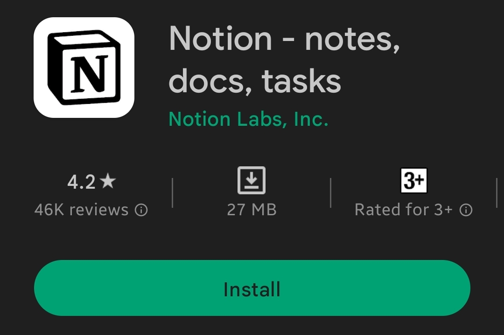

Ability to sync between devices and the notes can be accessed
from anywhere.
There are a lot of formatting options alongwith the ability to
record audio as well.
Teams can collaborate and share things like notes, reports,
agendas, etc.
Cons
Not suitable for short or brief notes and only reasonable for
long detailed notes with more complex tasks.
The features in the free version of the app are limited and the
user needs to purchase the business plan for full functionality.
Not geared towards note taking for students and provides a very
sophisticated UI.

Pros
Notion focuses mainly on project and task management and it does
this very well with features, users can place the task list,
project documents, file attachments, and schedules in an
organized layout.
It is cross compatible so users can access thier notes from
anywhere they log in from.
There are custom made templates by the community to use which
speed up the process of organizing, managing, and tracking
tasks. Moreover, there are other templates for project roadmaps
too.
Cons
New users may find it tricky and time-consuming to navigate
through the app.
Editing and formatting is not that intuitive, therefore, basic
formatting can be a lengthy and frustrating process.
Setting up the app for collaboration and task management
requires time and is a time-consuming process.